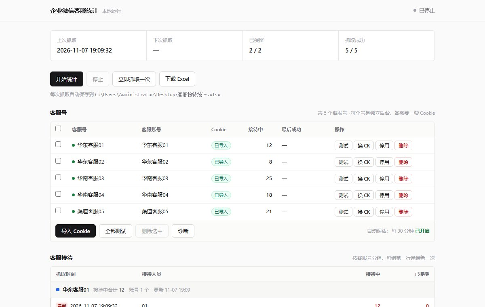
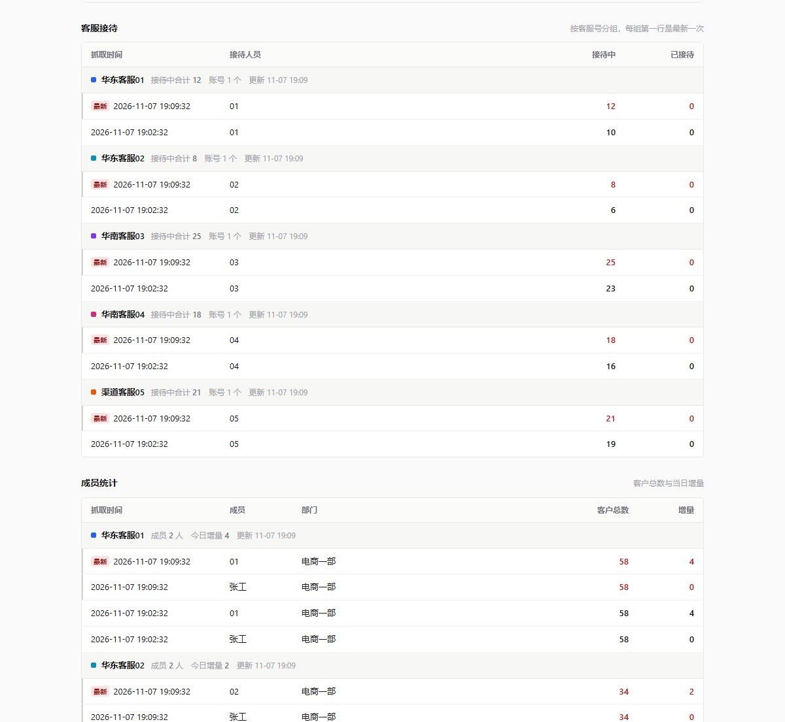

The client's support team is spread across five entirely separate WeCom tenants
(different corp IDs, not multiple accounts under one company). Someone had to log into
each back office and copy the session counts by hand — a ten-minute chore that was easy to get wrong.
Parallel collection across tenants — each with its own session, one dropping out doesn't affect the others.
Randomised scheduling between 5 and 10 minutes so the request rhythm stays irregular.
Session keep-alive — a separate thread pings each back office every 30 minutes, keeping the login alive and surfacing failures early.
Failure isolation — an expired session is flagged and paused immediately instead of being retried into a lockout. Banned accounts can be disabled in one click.
Automatic archiving — every round is written to an Excel file on the desktop, overwritten in place, with the newest batch highlighted.
Zero install — the Python runtime is bundled; double-click and it runs.

账号管理：一行一个客服号，Cookie 状态、当前接待量、最后成功时间一目了然。底部是导入、批量测试、诊断。Account panel — one row per account with session status, live session count and last success. Import, bulk test and diagnostics sit at the bottom.

数据面板：按客服号分组，每组头部显示该号接待合计与更新时间，组内从新到旧排列。Data view — grouped by account, with each group header showing the running total and last update, newest row first.
When the session dies, the endpoint still answers HTTP 200 with
{"result":{"errCode":-3,"message":"outsession"}} — note the capital C,
sitting outside the usual errcode field.
Checking only errcode reads "logged out" as "no data today" — the run looks successful while
producing nothing. That's the worst kind of bug because nothing throws. It now reads
result.errCode separately and treats network flakiness (retry three times) differently
from a confirmed expiry (flag at once).
说明
Notes
截图里的账号名已做脱敏处理。工具只读取数据，不会对后台做任何写操作。
Account names in the screenshots have been anonymised. The tool is read-only — it never writes to the back office.